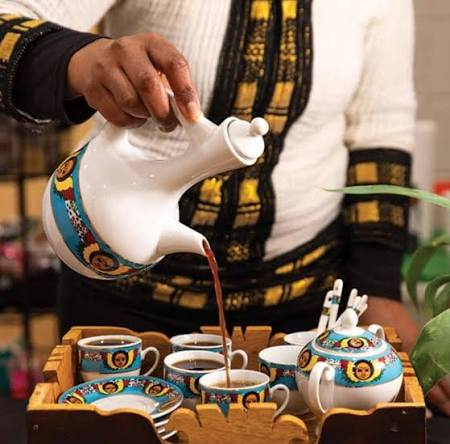

Three Rounds of the Ceremony
A traditional gathering usually includes three rounds, each with its own name:
- Abol: The first and strongest brew of the session.
- Tona: The second round, lighter in strength and often shared with conversation.
- Baraka: The third and final round, meaning blessing.
Popular Coffee Regions Comparison
Here is a quick comparison of well-known Ethiopian coffee origins often featured in cafes:
| Region | Flavor Profile | Typical Processing |
|---|---|---|
| Yirgacheffe | Floral, citrus, and tea-like | Washed |
| Sidama | Sweet berry and stone fruit | Natural |
| Harar | Rich winey notes and dark chocolate | Natural |